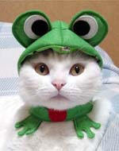
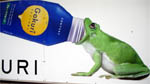
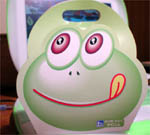
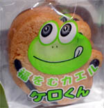
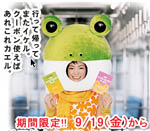

カエルになりたい猫を変身大作戦！ 【福岡発博多諤諤堂・書肆侃侃房御一同様】猫だってカエルになりたい。そんな猫にうってつけのグッズが発売されています。もーむっちゃくちゃに可愛いですよね。どんな動物もきっとカエルになりたいに違いないですううううううう。大興奮。いますぐ、ここにいってきましょう。 【全国かえる奉賛会】さっそくいってきたぞおおお。大王は、猫が飼いたくなった。カエルに変身させたいがために、まず猫をかおうではないかあ。 カエルにゃんに変身セットは、たったの3,800円（税込）で『みんなでゲコゲコ〜ピョンピョンとカエルさんに変身しましょう♪カエル帽子はアゴのところにマジックテープで着脱します。カエルチョーカーは赤いお口と手が付いて可愛いですよ、後ろのマジックテープで着脱します。おしゃれクラスは「上級者」さんです。日本中にカエル猫ちゃんがいっぱいになったら楽しいかも！！』だってさあああ。 もー興奮して寝れないほどうれしいぞお。このヒット商品が猫だけでなく、犬もカメレオンも、どんな動物にも汎用する商品に爆発的ヒットすることをのぞむ。いまから申し込んでも売り切れかもしれないが、あきらめずに、まず、商品をゲットしたあと、近所にうろうろしている捨て猫を拾ってこようではないかああああ。
大切に育てて、カエルファッションに身を包んで自慢して歩こう。
カエルがゴクリをがぶ飲み！ 【福岡発ぴのこ同志記者、けぐり同志記者】ぴのこ記者＞すごいよおお。いますぐに地下鉄天神駅にいってみてください。そこのポスターにカエルがあああ。けぐり記者＞カエラー諸兄におかれてはもうご存知かもしれませんが、私は本日発見しました。サントリーの清涼飲料Gokuriの看板にカエルが出てるんですね。デジカメをもっていなかったのが悔やまれましたが、サントリーのサイトにちゃんと載ってますね。
 道の駅、おふくにケロ君サブレ登場！ 【福岡発げこげこ大王の母】カエルのサブレがあったけん、買って来たよ。どっかでみたことあるっちゃけど、どーしても思い出せん？？【全国かえる奉賛会】げー。これって名古屋の青柳ういろうの『カエルサブレ』と何から何迄同じじゃあああああん。パクリかあああ？でも、可愛いから許す。大目にみてやってくれええええ。
サブレといえば、全国的名物。道の駅おふくが、独自に構想をあたため、考えぬいた末に、偶然たまたま、青柳総本家のサブレと似てしまったものであろうか、謎。福を迎えるケロくん。がんばってくれい。
 天神イケル!カエル!！！【福岡発ぴのこ同志記者、蓮かえる同志記者】見つけました。西鉄電車の人がうらやましいカエルきっぷ。『天神イケル！カエル！クーポン』だけでもほしーい！【全国かえる奉賛会】 福岡の私鉄が発売したカエル！クーポン。さすがだああ。沿線にカエル寺があるだけあって、二つ鉄のカエルに込める情熱に感動したぞおおおお。 『天神イケル！カエル！クーポン』

さよならカエルサボテン！！最後の販売です【ケロ天市場】現在発売中の１０匹を最後に、カエルサボテンは販売を終えます。にんまり顔とにっこり顔があるんで、どちらでも選べます。【全国かえる奉賛会】長いこと、ここでたくさん生まれて育っていったカエルサボテンは、これで最後の販売です。九月いっぱいで、お別れだ。楽しい思い出と、元気な記憶とともに、サボテンは旅立っていきます。 |
メールマガジン登録
メールマガジン解除
Powered by


かえる古新聞過去に取り上げた記事を見出し付きで一覧したい人は、ここをクリック◆創刊号を見る◆先週号を見る◆話題の号を見る◆かえる新聞の昔を読む
|
私も入っています。。全国かえる奉賛会
大王様に会うには、このバナーをクリック。ずっと奥に写真館があるぞ。全国かえる奉賛会に入会するには、自分のホームページのどこかに、下の部分を追加するとバナーがリンク付きで表示されるぞ。どんどん入会しましょー |


|